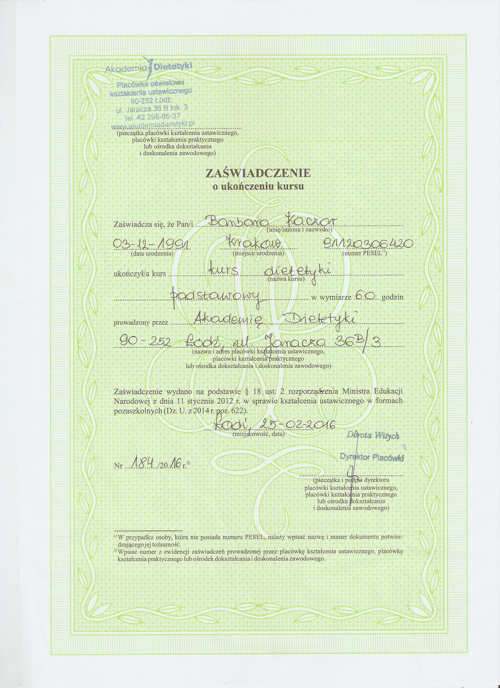
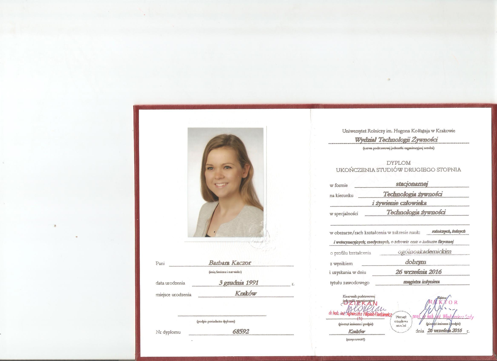
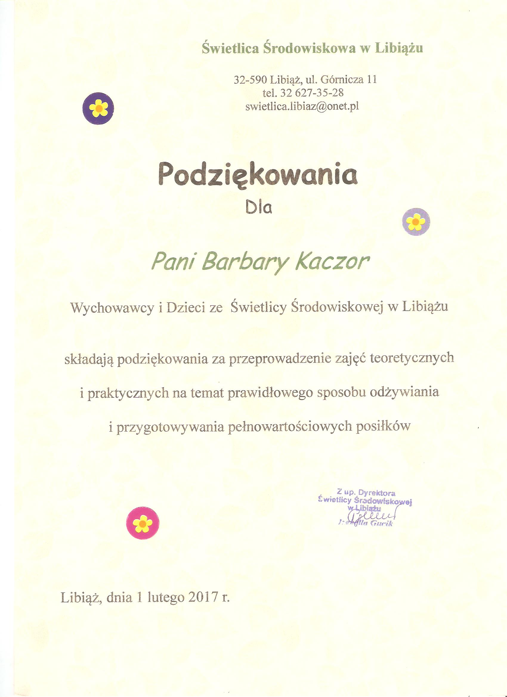

Witaj na mojej stronie. Nazywam się Barbara Kaczor, jestem specjalistą ds. żywienia, pracuje jako dietetyk. Ukończyłam studia magisterskie na kierunku Technologia Żywności i Żywienie Człowieka na UR w Krakowie.
Moja praca jest moją pasją, dlatego ciągle poszerzam swoją wiedzę uczestnicząc w różnych szkoleniach, kursach czy konferencjach. Nauki i wiedzy nigdy za wiele. Obecnie podjęłam kolejne studia w Medycznym Centrum Kształcenia Uniwersytetu Jagiellońskiego.
Świadome żywienie jest bardzo ważnym aspektem w moim życiu. Wam również chcę pokazać jak prawidłowy sposób odżywiania może wpłynąć na nasze zdrowie i samopoczucie.
Siedem wyrazów, które są kluczem do naszego sukcesu. W pracy cenię szczerość i współpracę. Wykorzystując swoje doświadczenie pomagam osobom, które chcą zmienić swój dotychczasowy sposób odżywania, zgubić kilka kilogramów czy też nauczyć się prawidłowych nawyków żywieniowych. Ważne jest dla mnie zrozumienie problemów oraz indywidualność, o czym możecie się przekonać na wizycie w jednym z moich gabinetów. Dobra dieta to smaczna dieta. Jadłospisy przeze mnie układane odpowiadają Twoim preferencją smakowym i uwzględniają tryb życia jaki prowadzisz. Prywatnie miłośniczka aktywnego spędzania wolnego czasu. Trasy rowerowe i pływanie to dwa sporty, które wywołują uśmiech na mojej twarzy. Sprawiają , że potrafię spojrzeć z innego pryzmatu na problemy, które przeplatają się w naszym życiu. Jak każda kobieta lubię zakupy, stanąć przed lustrem i stwierdzić „nie mam co na siebie ubrać”. Lubię i wieczory, gdzie na spokojnie po całym dniu pracy mogę założyć wygodne dresy, ciepłe kapcie i po prostu nie robić nic ;)
„Przyszłość należy do tych, którzy wierzą w swoje marzenia”